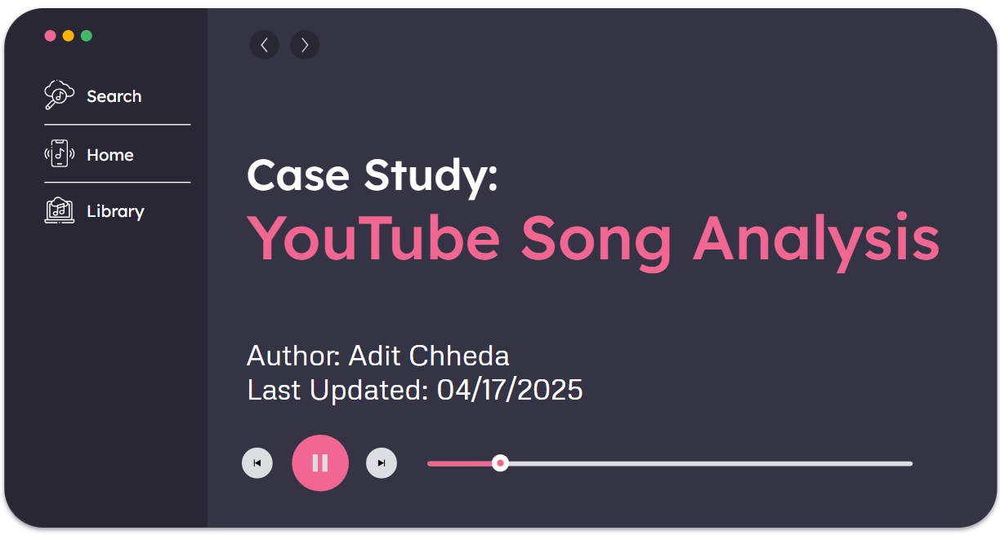

Case Study: YouTube Song Analysis
This case study explores the relationship between song characteristics (like mood, popularity, and licensing) across YouTube.
Through data analysis, it reveals that happy songs tend to receive more engagement, and not all official music videos are properly licensed.
The insights help content creators, marketers, and platforms optimize their strategies for better audience reach and compliance.
Skills: Python (pandas, matplotlib, seaborn)

Predicting Spotify Song Popularity
This project explores the prediction of Spotify song popularity using audio features and metadata, focusing on genre trends, song duration, and track name characteristics.
Through data cleaning, exploratory analysis, and multiple machine learning models, the Random Forest Regressor emerged as the most accurate predictor.
Key insights revealed that genre and duration have a stronger impact on popularity than track title length, offering valuable direction for music marketing and curation.
Skills: Python (pandas, matplotlib, seaborn, sklearn), Tableau